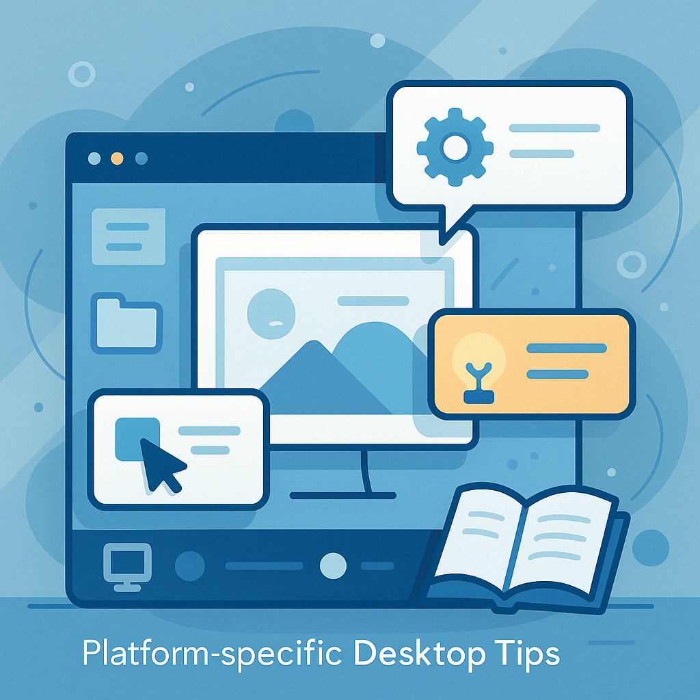

We believe security software like Kicksecure needs to remain Open Source and independent. Would you help sustain and grow the project? Learn more about our 11 year success story and maybe DONATE!
Network ObstacleDocumentationPost Install AdvicePrevious page: Network ObstacleIndex page: DocumentationNext page: Post Install AdvicePlatform-specific Desktop Tips

Kicksecure Platform-specific Desktop Tips and Tricks, RAM Adjusted Desktop Starter, Virtual Console, Full-Screen
All Platforms
Disable Terminal Emulator Banner
The following greeting banner appears when a terminal shell
bash prompt is opened.
Welcome to Kicksecure! https://www.kicksecure.com
Kicksecure Copyright (C) 2012 - 2026 ENCRYPTED SUPPORT LLC Kicksecure is Freedom Software, and you are welcome to redistribute it under certain conditions; type "kicksecure-license" for details. Kicksecure is a compilation of software packages, each under its own copyright and license. The exact license terms for each program are described in the individual files in /usr/share/doc/*/copyright.
Kicksecure GNU/Linux comes with ABSOLUTELY NO WARRANTY, to the extent permitted by applicable law; for details type "kicksecure-disclaimer" .
Kicksecure is a derivative of Debian GNU/Linux.
Kicksecure is a research project.
default user account: user default password: No password required. (Passwordless login.)
Type: "kicksecure" for help.
To disable the banner, follow these steps.
1. If user-sysmaint-split is installed,
boot into PERSISTENT Mode | SYSMAINT Session | system maintenance tasks.
2.
3. Run the following command.
sudo chmod -x /etc/update-motd.d/30_dist-base-files
4. Done.
The process is now complete.
See also: Disable Virtual Console Banner.
Shut Down Kicksecure
To shut down Kicksecure, open a terminal and run.
sudo poweroff
Alternatively, use the menu option:
- Kicksecure:
- In user sessions:
Start Menu→Log Out→Shut Down - In sysmaint sessions: click the
Shut Downbutton in the System Maintenance Panel
- In user sessions:
- Kicksecure for Qubes:
Blue Q button→Qubes Tools→Qubes Manager→kicksecure→Shutdown
Kicksecure means all Kicksecure platforms except Kicksecure inside Qubes. This includes Kicksecure on hardware, Kicksecure in virtual machines (VM) such as VirtualBox, and Kicksecure KVM.
Virtual Consoles
Using Kicksecure as a Host Operating System

Virtual consoles is a feature inherited from Debian GNU/Linux which is unfamiliar to many users. The following keyboard shortcuts activate the Debian (not Kicksecure) feature:
- Text console: Press
Alt + Ctrl + F1- Additional text consoles: Press
Alt + Ctrl + F2orF3and so on.
- Additional text consoles: Press
- Graphical console: Press
Alt + Ctrl + F7
See also Protection against Physical Attacks, Virtual Consoles.
Virtual Machines
Platform |
Steps |
|---|---|
KVM |
The desired virtual console key shortcut can be selected under
the |
Qubes dom0 |
Qubes dom0 inherited the same feature
( |
Qubes VMs |
In order to access VMs in dom0, run: [1]
See also add Qubes host key to allow switching virtual console (ctrl + alt + F1) or SysRq for HVM. |
VirtualBox |
The VirtualBox default is
|
Due to technical limitations, an easier to understand presentation
like Kicksecure username login: or something similar cannot
be shown. [3]
- Enter your username (this is most likely
user) and press . - Enter your password and press .

- Default username: user
- Default password: No password required. (Passwordless login.) [4]
Disable Virtual Console Banner
This process is similar to Disable Terminal Emulator Banner.
1. If user-sysmaint-split is installed,
boot into PERSISTENT Mode | SYSMAINT Session | system maintenance tasks.
2. Open a virtual console.
3. Move the /etc/issue.kicksecure file
out of the way.
sudo mv /etc/issue.kicksecure /etc/issue.kicksecure.bak
4. Create an empty file in its place.
sudo touch /etc/issue.kicksecure
5. (Optional) Divert
/usr/lib/issue.d/20_security-misc.issue to prevent the
unauthorized access warning from being displayed either.
sudo dpkg-divert --divert /usr/lib/issue.d/20_security-misc.issue.bak --rename /usr/lib/issue.d/20_security-misc.issue
6. Done
The procedure is complete.
Kicksecure
Disable Autologin

Autologin is enabled by default in the login manager by Kicksecure.
See Login#Configuring_GUI_Autologin for detailed instructions on disabling autologin.
Minimal RAM Required
Kicksecure is based on Debian stable releases thus it will use similar Memory and Disk Space Requirements for Debian.
RAM Adjusted Desktop Starter

By default, Kicksecure VMs are configured with 2048 MB of virtual RAM. This can be reduced on systems with limited available resources.
- If total VM-accessible RAM is more than 480 MB, the default graphical desktop environment (DE) (LXQt) is started. (Some RAM will be reserved for the virtual hardware, so in practice one must assign more than 512 MB RAM for the desktop to start. 768 MB RAM is the minimum recommended.)
- If total VM-accessible RAM is 480 MB or less, the DE is not started.
This feature is useful for users with low RAM, as Kicksecure can still function with as little as 512 MB of RAM in a CLI-only environment.
If configuration or troubleshooting is needed, assigning 768 MB of
RAM will automatically boot into the graphical desktop environment.
Additional settings are available in the /etc/rads.d folder
to configure this feature: more RAM can be allocated (while still opting
not to start a desktop environment), different display managers can be
used, and so on. See the /etc/rads.d/30_default.conf file
for configuration examples.
For more information, see RAM Adjusted Desktop Starter.
Disable the Graphical Desktop Environment
This is for advanced users only.
To stop the graphical desktop environment.
sudo systemctl stop greetd
To disable automatic start at boot of the graphical desktop environment.
sudo systemctl disable greetd
To restart the graphical desktop environment.
sudo systemctl start greetd
To re-enable automatic start at boot of the graphical desktop environment.
sudo systemctl enable greetd
Do not attempt to uninstall the graphical desktop environment. This would require removal of Kicksecure meta packages, and Kicksecure meta packages are not designed to be removed. If you want a Kicksecure server installation, download the Kicksecure CLI version or build it from source code. See VirtualBox#CLI and KVM#CLI.
related: Using Kicksecure with Other Desktop Environments such as GNOME, KDE, LXDE, MATE, ...)
Use Full-screen Mode
It is recommended to work in full-screen mode; this feature is also inherited from VirtualBox and KVM. When full-screen mode is enabled, the Kicksecure virtual display will automatically increase its resolution to the host system's resolution.
VirtualBox
To activate and deactivate full-screen mode, press the VirtualBox
Host Key + F. The current Host Key is visible in the bottom right corner
of VirtualBox. The VirtualBox default is
Right Ctrl + F.
Host key can be changed using VirtualBox →
Global Settings → Input →
Host Key.
KVM
To activate full-screen mode when using virt-manager, open the VM
window, then click View → Fullscreen. To
deactivate full-screen mode, move the mouse pointer to the top middle of
the screen, and click the Leave fullscreen button.
Display Configuration
 This section describes features that are in development. These features
may not exist or may behave differently than documented at the
moment.
This section describes features that are in development. These features
may not exist or may behave differently than documented at the
moment.
GUI configuration (wdisplays)
wdisplays is a simple and intuitive display configuration utility. You can use it to set display resolution, position, scaling, and related settings. This is the recommended tool for experimenting with the correct setup for your use case.
Note that settings configured with wdisplays are not persistent. They will be lost when you log out, reboot, or shut down.
To launch wdisplays in a user session, click
Start Menu → Preferences →
Displays. In a sysmaint session, click the
Configure Displays button in the System Maintenance Panel,
then click Launch wdisplays.
Persistent configuration (kanshi)
kanshi is a background process that adjusts your monitor configuration as displays are plugged in and unplugged. Monitor setups are configured in one or more profiles. Kanshi will automatically detect the correct profile to apply depending on what displays are connected, and will automatically activate that profile. Each profile defines which monitors should be enabled and how they should be configured. The same settings available in wdisplays can be set using kanshi.
To open kanshi's configuration file in a user session,
click Start Menu → Preferences →
Open display configuration file (kanshi). In a sysmaint
session, click Configure Displays in the System Maintenance
Panel, then click Open display configuration file (kanshi).
By default, the file will contain instructions for most simple display
configuration needs. These instructions can be viewed in the source
code. See
 Kicksecure/desktop-config-dist.
Kicksecure/desktop-config-dist.
After editing the configuration file, save it, then apply the
configuration. To do this in a user session, click
Start Menu → Preferences →
Apply display configuration (restart kanshi). In a sysmaint
session, click Configure Displays in the System Maintenance
Panel, then click
Apply display configuration (restart kanshi).
For more details on display configuration, run
man 5 kanshi in a terminal.
LXQt Scaling
Default Home Folder Configuration Files Reset
Before following these instructions to wipe the whole LXQt settings folder and restore defaults, it is recommended to backup existing LXQt settings.
1. Logout from and stop LXQt by clicking
Application Menu → Power button →
Logout → Yes.
2. Open a virtual console.
3. Delete folder ~/.config/lxqt.
safe-rm -rf ~/.config/lxqt
4. Delete folder
~/.config/pcmanfm-qt.
safe-rm -rf ~/.config/pcmanfm-qt
5. Delete folder
~/.config/qterminal.org.
safe-rm -rf ~/.config/qterminal.org
6. Switch back to the login screen by pressing
Ctrl + Alt + F7, then log in. LXQt will automatically
regenerate its settings files as needed.
7. Done.
The process has been completed.
Kicksecure-Qubes
Avoid VM Full Screen Mode
It is not recommended to allow Kicksecure-Qubes or other VMs to completely "own" the full screen. Overriding Qubes' GUI virtualization daemon restrictions means the colored decorations drawn by each VM window will not be visible. In this case, a malicious application might not actually release the full screen (while it appears normal), or the full desktop may be emulated so users are tricked into entering sensitive information inside false "trusted" domains. [5]
See Also
Footnotes
- This is not a real virtual console, but using login.
- Inside VirtualBox, the
Alt + Ctrlkeys are already registered by the host operating system. Host key can be changed usingVirtualBox→Global Settings→Input→Host Key. - The
loginprogram unfortunately does not provide this option. - Rationale for Change from Default Password changeme to Empty Default Password
- https://www.qubes-os.org/doc/how-to-enter-fullscreen-mode/
Categories: Documentation